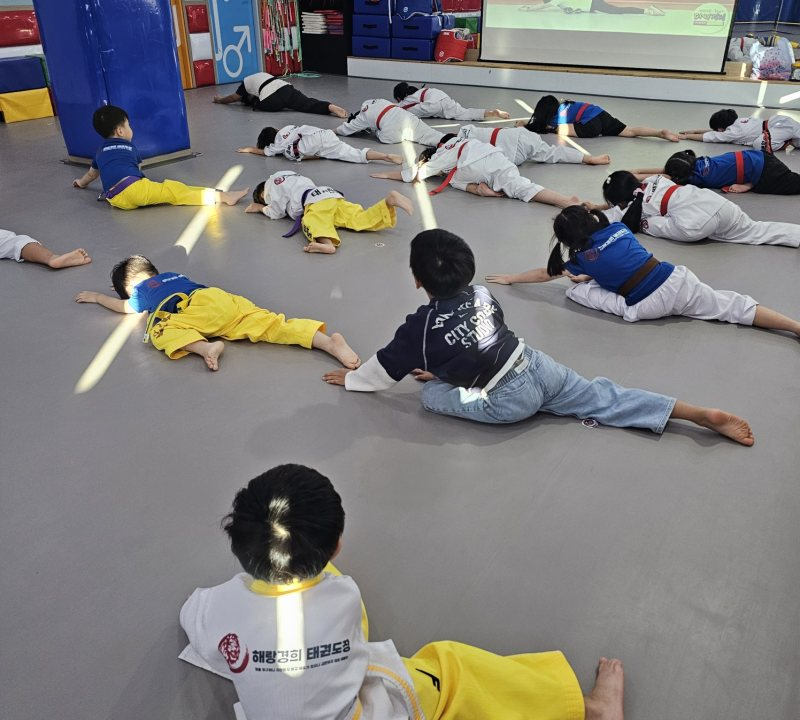
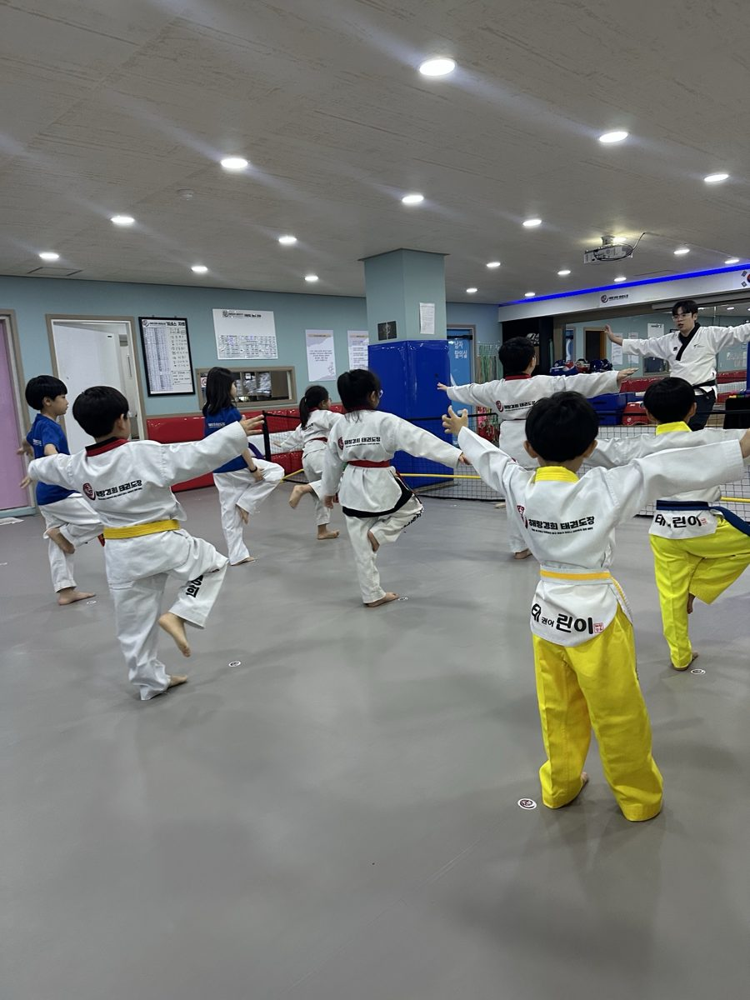
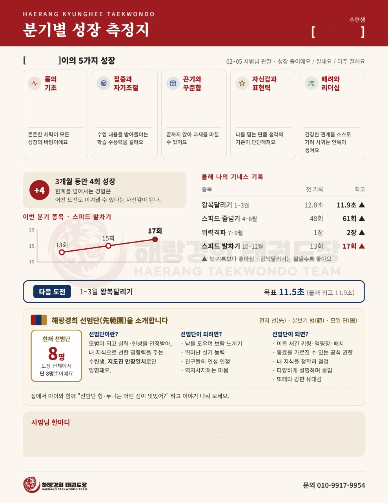

해랑경희 태권도장
칼럼 목록
해랑경희 태권도장
칼럼 목록
운동신경,
타고나는 걸까?

운동신경, 타고나는 게 전부가 아니에요!
다양한 움직임 경험이 답입니다.
유치부 시기, 운동은
‘많이’보다
‘많이’‘다양하게’!
달리기는 잘하는 친구도→ 한 발 서기는 어려워할 수 있어요
균형 감각이 좋은 친구도→ 공 던지기는 서툴 수 있어요
움직임마다 필요한 능력이 달라요.
골고루 경험하는 게 중요해요!
운동신경의 기초
3가지 능력
- 균형 감각몸의 중심을 잡는 능력
- 협응력눈·귀·손·발을 함께 쓰는 능력
- 신체 조절 능력상황에 맞게 움직이고 멈추는 능력
하나씩 알아볼까요?

넘어지지 않는 힘

한 발 서기, 선 따라 걷기, 착지까지!
발차기에도 균형이 꼭 필요해요.
신호 듣고
바로 발차기!
눈·귀·손·발을 함께 쓰는 능력이에요.
신호에 맞추면 반응 속도도 쑥쑥!
멈추는 것도
배워요!
달리다 멈추고, 장애물도 피해요!
놀이로 하니 즐겁게 연습해요.
기구 없이 OK
집에서 해보는
신체 발달 놀이
- 한 발로 균형 잡기처음엔 보호자 손 잡고 시작해도 좋아요
- 선 따라 걷기바닥에 테이프로 선을 붙이고 따라 걸어요
- “출발! 멈춰!” 놀이신호에 맞춰 움직이고 멈춰요 (걷기로 시작)
다른 친구와 비교하지 말고,
어제보다 나아진 모습을 칭찬해 주세요!
해랑경희
유치부 수업은?
매번 달라지는 수업 흐름 (예시)
균형·이동
감각 깨우기→신체 조절
능력 향상→기본동작
발차기→도구
활동
감각 깨우기→신체 조절
능력 향상→기본동작
발차기→도구
활동
- 함께 + 수준별함께하는 수업과 수준별 수업을 병행해요
- 성장 측정지분기마다 기네스 기록과 5가지 성장 요소를 보내드려요
- 선범단 선배실력과 인성을 인정받은 선배들이 모범이 돼요

▲ 분기별 성장 측정지
우리 친구의
첫 태권도 예고편
처음엔 누구나 낯설어요.
“태권도 배우러 가자” 보다
“도장에 놀러 가 볼까?” 하고 말해 보시면
친구들이 마음의 준비를 할 수 있고,
도장에서도 재미있게 운동할 수 있어요.
위치울산 남구 돋질로251번길 38, 3층
삼신초 정문 좌측 CU 건물 3층
삼신초 정문 좌측 CU 건물 3층
체험 신청네이버 예약 · 톡톡
문의010-9917-9954